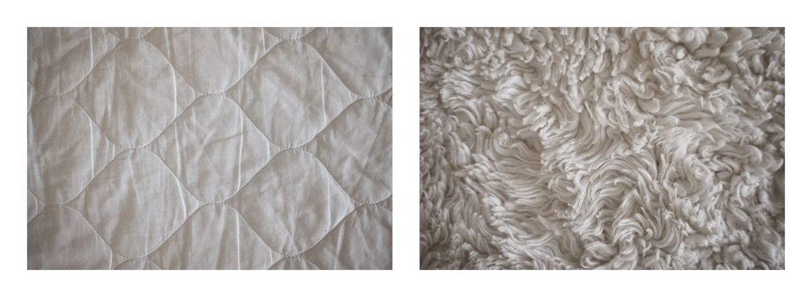

Off-Whites

Completed in 2025. Digital version of a physical object.
A study of things in a home which are supposed to be white and clean.
The last photo is of unused printer paper, intended to be printed back onto paper.
A study of things in a home which are supposed to be white and clean.
The last photo is of unused printer paper, intended to be printed back onto paper.